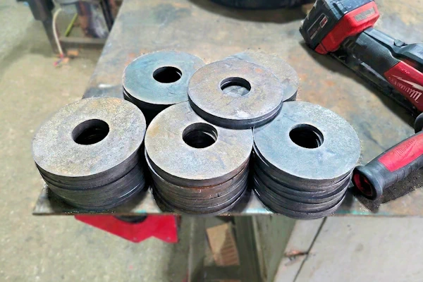
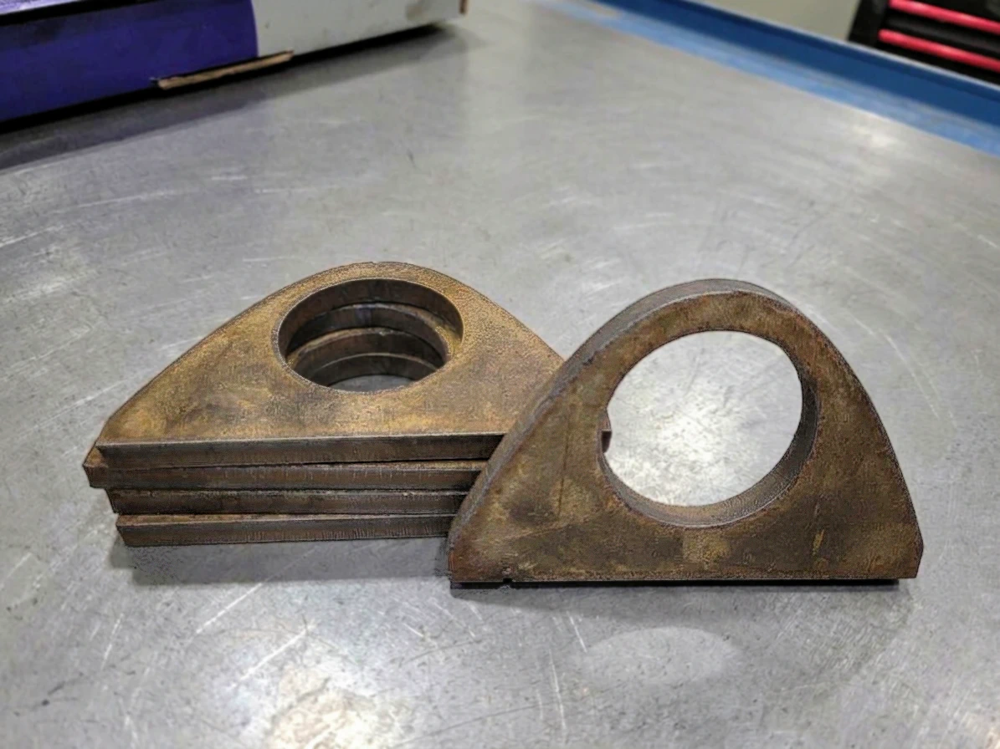
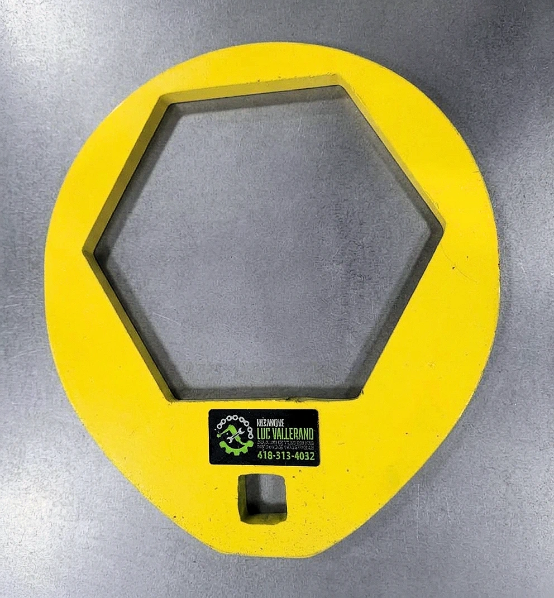
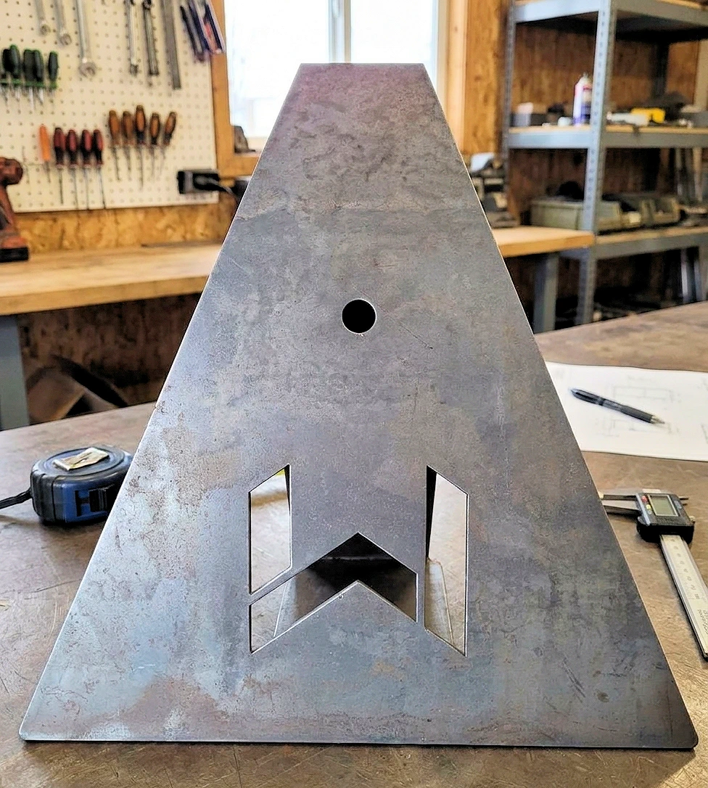

La découpe est souvent la première étape d’un projet métallique. Chez Mécanique Luc Vallerand, elle est réalisée avec attention pour que chaque pièce s’intègre correctement à l’ensemble, que le travail soit unique ou répété. Basés à Saint-Honoré-de-Shenley, nous accompagnons les entreprises de la Beauce et de la région de Québec depuis 2019.
Que vous ayez un plan complet, un croquis ou une pièce modèle, nous prenons le temps de valider les dimensions et les exigences avant de commencer. L’objectif est simple : livrer une découpe propre, fidèle à votre besoin et prête pour l’étape suivante.
Une découpe bien réalisée facilite l’assemblage, limite les retouches et évite les mauvaises surprises sur le chantier. Nous portons donc une attention particulière aux tolérances, à la propreté des coupes et à la cohérence des pièces entre elles. Si un ajustement est nécessaire, nous vous le signalons avant de poursuivre.
Oui. Un plan détaillé n’est pas toujours nécessaire : des mesures précises, un croquis ou une pièce modèle peuvent suffire. Nous validons les informations avec vous avant de commencer.
Le délai dépend de la complexité et du volume. Nous vous donnons une estimation lors de la demande de soumission, avant toute réalisation.
Nous travaillons principalement avec les entreprises de la Beauce et de la région de Québec. Contactez-nous pour valider votre secteur et les modalités.




Appelez-nous ou écrivez-nous pour discuter de votre besoin et obtenir une soumission.